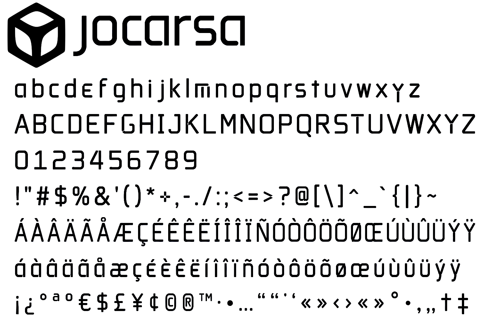
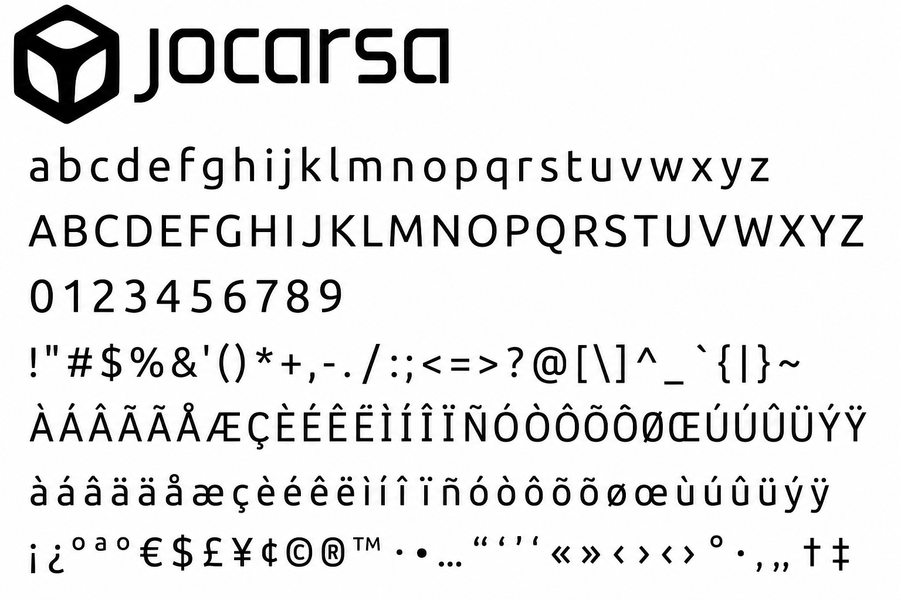
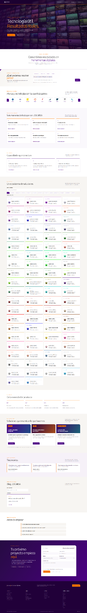

Hacer
Las ideas están bien. Pero hay que convertirlas en algo que funcione.

Manual de identidad corporativa
Desarrollamos aplicaciones, plataformas e integraciones que hacen más sencillo el trabajo de las organizaciones.
Idea central
En JOCARSA hacemos tecnología, pero la tecnología no es el objetivo final. El objetivo es resolver problemas, aprender, construir y conseguir que las cosas funcionen.
Las ideas están bien. Pero hay que convertirlas en algo que funcione.
No queremos usar tecnología sin controlarla. Primero entendemos; después construimos.
Las herramientas ayudan. El trabajo, la constancia y la responsabilidad siguen siendo nuestros.
El conocimiento importa. La actitud, la educación y el valor humano también.
Misión
Crear software, herramientas y formación que conviertan conocimiento en capacidad real. Queremos quitar fricción donde la tecnología pueda quitarla, explicar lo complejo hasta que se entienda y dejar a las personas el trabajo que de verdad merece su esfuerzo.
No para trabajar menos. Para poner el esfuerzo donde aporta más.
Visión
La informática cambia muy rápido. Eso trae amenazas, claro, pero también oportunidades enormes. Queremos explorar lo que viene, entenderlo de verdad y convertirlo en soluciones útiles para personas, empresas y educación.
No se trata de adivinar el futuro. Se trata de estar preparados para construirlo.
Lo que no negociamos
Las herramientas pueden facilitar el camino. No sustituyen las ganas de aprender, trabajar y llegar hasta el final.
Somos adultos. Entendemos las consecuencias, cumplimos compromisos y respondemos por lo que hacemos.
No vale que una IA, una librería o una herramienta haga algo si no sabemos qué le hemos pedido y qué nos ha devuelto.
Nos gustan las ideas, pero todavía más verlas funcionando. Prototipar, probar, corregir y entregar.
Lo que hoy diferencia, mañana puede ser el mínimo. Así que aprendemos, actualizamos y volvemos a mejorar.
El conocimiento técnico importa muchísimo. La educación, la actitud, la comunicación y el trabajo en equipo también.
No esperamos a que alguien nos obligue. Construimos, publicamos, preguntamos y buscamos oportunidades.
Aprender y trabajar sirve para vivir mejor. Y, cuando aparece la oportunidad, también para mejorar un poco el mundo que nos rodea.
Cómo hablamos
No hablamos como un folleto corporativo. Explicamos las cosas como son, incluyendo la parte difícil. Si algo exige trabajo, lo decimos. Si algo puede hacerse mejor, lo intentamos. Si no sabemos algo todavía, también lo decimos.
«La idea es ponérselo fácil a la persona allí donde una herramienta puede ayudar, para que pueda poner el esfuerzo donde realmente importa.»
“Trabajamos con ambición, y ponemos los medios necesarios para convertirla en resultados.”
“La tecnología plantea nuevos retos, pero también abre oportunidades extraordinarias.”
“Si algo puede hacerse mejor, lo revisamos, lo replanteamos y seguimos avanzando.”
Grandilocuencia, tecnicismos innecesarios o promesas que no podamos convertir en resultados reales.
El símbolo
El símbolo de JOCARSA parte de una lectura tridimensional: un cubo isométrico, estable y reconocible, que habla de estructura, construcción y tecnología.
Dentro aparece otra forma. No hace falta convertirla en una figura literal: puede leerse como volumen, núcleo, esfera, conocimiento o posibilidad. Algo contenido dentro de una estructura que, al mismo tiempo, parece querer ir más allá de ella.
La idea importante no es describir el dibujo. Es entender lo que representa: profundidad, capas y dimensiones que todavía podemos explorar.
Estructura, método y construcción.
Inteligencia, conocimiento y propósito.
No miramos una superficie: pensamos en capas.
Tridimensionalidad y futuro
JOCARSA nace visualmente en tres dimensiones, pero la intención es no quedarse ahí. El cubo representa lo que podemos construir y comprender hoy. La forma interior sugiere que hay algo más dentro, detrás y más allá.
Por eso el símbolo puede entenderse también como una aproximación conceptual al hipercubo: no porque el logotipo pretenda dibujar matemáticamente una cuarta dimensión, sino porque representa una forma de pensar.
Regla
No hace falta llenar cada centímetro. El área mínima de protección se define como x, aproximadamente la altura visual del trazo principal del símbolo.
Dejad ese espacio libre. Si todo compite por llamar la atención, al final nada llama la atención.
Tecnología · profundidad · identidad
Valencia · energía · proximidad
Texto · estructura · contraste
Espacio · legibilidad · calma
Proporción recomendada
Índigo: grandes superficies, portadas, cabeceras y elementos de identidad.
Naranja: llamadas a la acción, detalles, subrayados, indicadores y acentos.
Neutros: respiración visual, texto, fondos de lectura y documentación extensa.
JOCARSA
La tipografía JOCARSA está para que una pieza se reconozca antes incluso de leerla. Usadla donde tenga sentido: logotipo, titulares breves, portadas y piezas de identidad. No hace falta ponerla en todas partes.


Ubuntu
Cuando hay que explicar, documentar o trabajar durante horas, manda la legibilidad. Ubuntu es nuestra tipografía funcional: textos largos, interfaces, documentación, fichas y presentaciones.
No queremos que el lector tenga que descifrar el diseño. Primero debe saber dónde mirar; después, qué leer; y finalmente, qué hacer.
Conocer solucionesDejad espacio. No pasa nada.
Decid lo importante sin rodeos.
El naranja llama. No tiene que gritar.
Si algo no aporta, fuera.
No deformar ni alterar proporciones.
No rotar ni inclinar.
No usar con contraste insuficiente.
No aplicar colores ajenos al sistema.
No añadir sombras, bordes o efectos.
No invadir el área de protección.
Sitio público · noviembre de 2026
La identidad combina una cabecera inmersiva oscura con un cuerpo editorial luminoso. El naranja marca acciones y detalles; el morado conecta la experiencia.
Hero con mosaico de aplicaciones, navegación discreta, titulares grandes, rejillas de tarjetas, catálogo filtrable, bloques alternos y contacto destacado.
Referencia: jocarsa.com · captura facilitada.

De la identidad a la interfaz
El diseño digital utiliza contraste entre superficies claras y áreas moradas, tarjetas repetibles y llamadas a la acción naranjas. La web comercial no debe confundirse con el diseño interno de cada producto.
Imagen o mosaico tecnológico con velo morado; titular blanco y acento naranja.
Fondos blancos o gris cálido, titulares oscuros, jerarquía editorial y espacios amplios.
Soluciones adaptadas a procesos reales.
Más información ↗Modelos locales y herramientas inteligentes.
Más información ↗Bordes finos, acento superior y enlaces breves. Las tarjetas organizan servicios y productos.
Lenguaje comercial real
El discurso público parte del problema del cliente y describe la solución con términos concretos. No prometer resultados cuantificados sin evidencia verificable.
Aplicaciones, paneles, APIs e integraciones adaptadas a procesos.
Herramientas accesibles mediante suscripción.
Asistentes, IA privada y automatización con modelos locales.
Mantenimiento, monitorización y soporte.
Diagnóstico, planificación e implantación.
Capacitación práctica para equipos.
Aplicación y gobierno de marca
Imagotipo original, firma JOCARSA, tono directo, morado como eje visual, naranja como acento y tipografía legible.
El hero oscuro, las secciones claras, el catálogo y las tarjetas describen la web observada; no son obligaciones para todas las aplicaciones.
Conservar la denominación «jocarsa | producto» y permitir códigos cromáticos específicos por aplicación sin perder el vínculo corporativo.
Contraste suficiente, navegación por teclado, foco visible, etiquetas claras y diseño adaptable. El color no debe ser la única señal de estado.
Este documento actualiza el manual previo según la captura proporcionada y el contenido público consultado el 6 de noviembre de 2026. Los tonos propuestos son aproximaciones de referencia visual; para fijar valores normativos definitivos deben verificarse contra el CSS de producción y los archivos maestros de marca. Los ejemplos de clientes, testimonios y resultados no deben presentarse como casos certificados sin autorización.
Principio de consistencia
Tecnología que entendemos. Trabajo que se nota. Herramientas que sirven. Y, cuando haga falta, lo que haga falta.